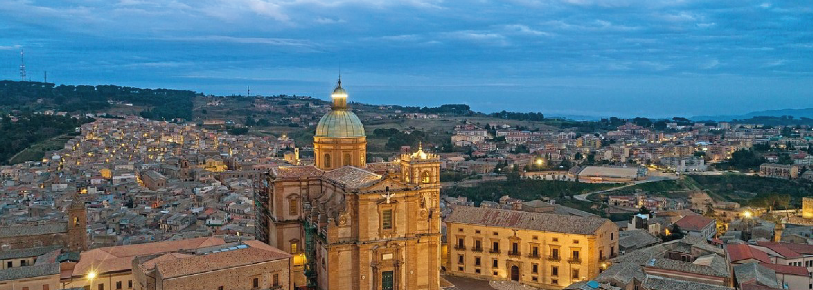
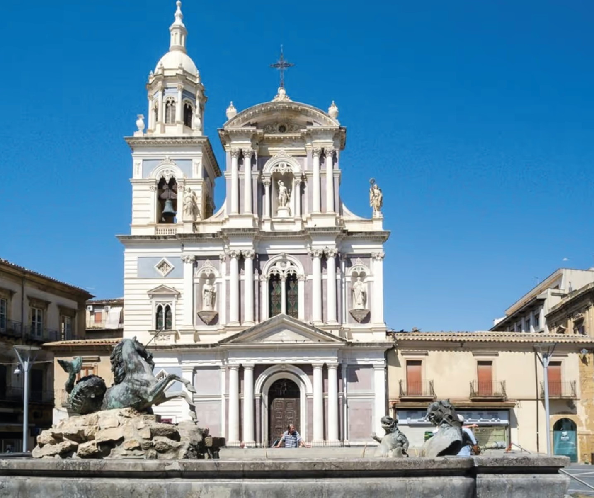
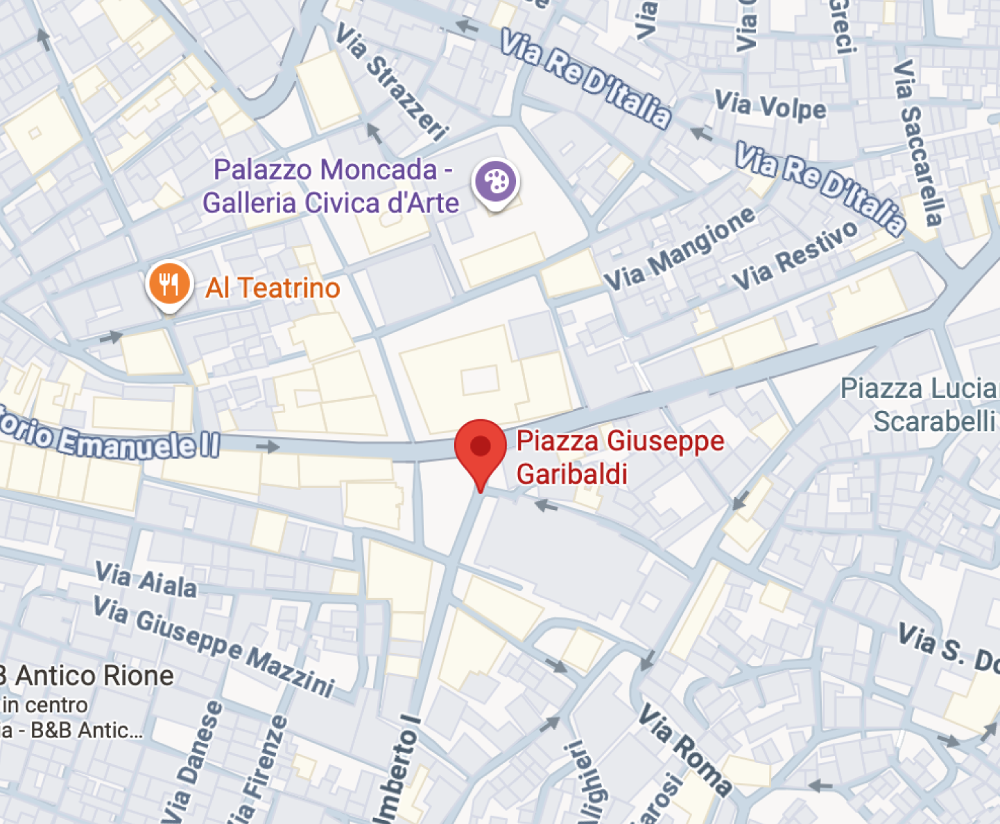

Caltanissetta se encuentra en el corazón de Sicilia, ofreciendo un contraste entre la calma de sus calles y la historia de sus plazas y monumentos. La ciudad ha sido un centro estratégico desde la época medieval, con calles amplias y avenidas que muestran su pasado aristocrático. Sus mercados y plazas transmiten una vida urbana tranquila, donde la historia se mezcla con la rutina cotidiana de sus habitantes.

PIAZZA GARIBALDI


Piazza Garibaldi constituye el principal espacio público de Caltanissetta y el eje central de la vida urbana. En ella confluyen las dos arterias más importantes de la ciudad y se alzan edificios representativos como el Palazzo del Carmine y la Catedral de Santa María la Nova. En el centro destaca la Fuente del Tritón, obra del escultor local Michele Tripisciano. La plaza adquiere especial relevancia durante la Semana Santa, cuando las monumentales “Vare” recorren este espacio en una de las celebraciones religiosas más significativas de Sicilia, reforzando su dimensión cultural y simbólica.
VISITA ALL TEATRO MARGHERITA
El Teatro Margherita es un símbolo cultural de Caltanissetta. Participar en sus representaciones o simplemente admirar su fachada permite sumergirse en la historia artística de la ciudad. La combinación de historia y modernidad hace que la plaza y sus alrededores sean un recorrido imprescindible para comprender la vida urbana y cultural de Caltanissetta.